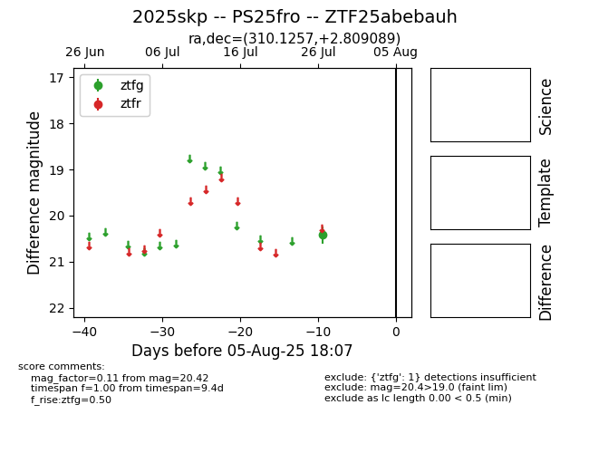

Target 2025skp at 2025-08-05 23:02, see:
FINK: fink-portal.org/2025skp
Lasair: lasair-ztf.lsst.ac.uk/objects/2025skp
ALeRCE: alerce.online/object/2025skp
TNS: wis-tns.org/object/2025skp
YSE: ziggy.ucolick.org/yse/transient_detail/2025skp
alt names
ZTF25abebauh (ztf,fink)
2025skp (tns,yse)
PS25fro (panstarrs)
coordinates:
equatorial (ra, dec) = (310.1257,+2.80909)
galactic (l, b) = (48.7938,-22.63688)
photometry
last ztfg=20.42
1 ztfg detections
